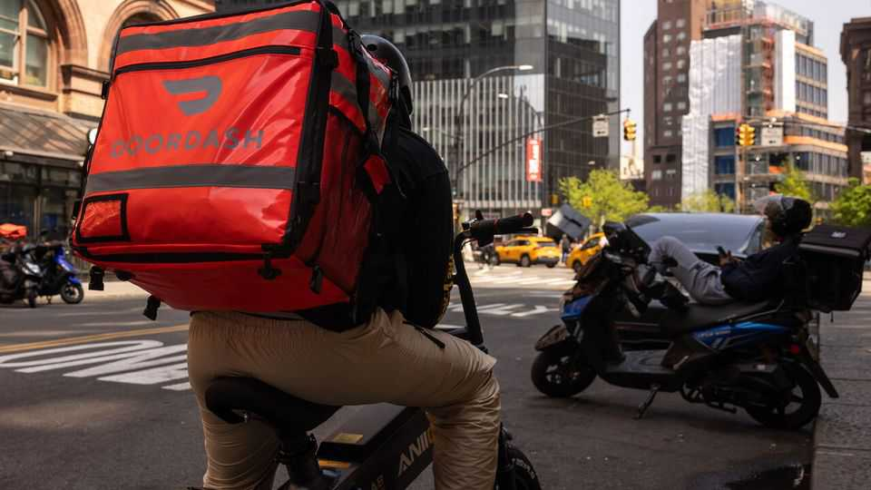

Can a DoorDash-Instacart fusion stand up to Amazon and Walmart?
The proposed merger shows the danger that delivery startups face

Nov 5th 2026
In the mid-2010s apps delivering victuals on demand cropped up everywhere. At a time when investors found cash-torching gig-economy startups alluring, some delivery businesses attracted valuations of many billions. But the days of their explosive growth are over. So far in 2026 downloads of standalone delivery apps in America and Canada are down by a fifth from the same period a year before, estimates Sensor Tower, a market-intelligence firm.
Today consolidation is in order. On October 29th DoorDash, a meal-delivery firm, said it would buy Instacart, a competitor focused on groceries, for $17bn. DoorDash expects the merger will eventually yield $500m of extra profit a year as the two firms fuse their software systems and advertising arms. If the merged entity is to take on Amazon and Walmart, which within a few years have come to dominate America’s online-grocery market, it will need every penny.
Online sales now account for a fifth of Americans’ spending on groceries, according to Brick Meets Click, a data provider. They have grown by more than 20% year on year for eight quarters. Yet the boom has benefited retail behemoths more than gig-economy disrupters. Walmart learned to be a tech firm and Amazon a grocer faster than newcomers could gain a foothold.
The two giants now account for 55% of America’s online-grocery sales, reckons Wedbush, a financial-services firm. Their expansion has squeezed Instacart and DoorDash, as well as others such as Uber Eats and Grubhub. Lately the upstarts have had to rely more on paid referrals and ads to win customers. “Everybody is fighting for the scraps left after the top players,” says Aaron Cheris of Bain, a consultancy.
In search of scale and new markets, delivery apps worldwide have been on a shopping spree. Last year DoorDash snapped up Britain’s Deliveroo just as Prosus, a technology-investment firm that owns delivery apps around the world, bought Just Eat Takeaway, a Dutch rival. Uber is poised to snaffle Delivery Hero, based in Berlin; it also considered gobbling up Instacart at least twice.
DoorDash’s purchase of Instacart, however, is about expanding within America. It will help DoorDash move further into groceries, which need more complex software than takeaway meals because workers have to shop in-store and find substitutes for missing items rather than just waiting for a brown-bagged restaurant order. It also allows DoorDash to combine Instacart’s ad business, which enjoys enviably high margins, with its own. For Instacart the deal offers the protection of scale: DoorDash’s market value of $73bn is more than five times its own.
Even under the deal-loving Trump administration, the merger is not sure to go through. As the midterm elections have shown, “affordability” is the hottest of political topics. Regulators may frown on deals that they suspect will push grocery bills up. Last month DoorDash and Instacart (as well as Uber and Walmart) were among the firms from which the Federal Trade Commission, a competition regulator, requested information on their use of personalised pricing.
DoorDash and Instacart argue that greater scale will mean lower costs and hence cheaper groceries. What is more, they add that their combined platform will help corner shops fend off the grocery giants. DoorDash has gone so far as to roll out a website called Shop Local Together, replete with mentions of affordability.
Even if regulators can be convinced of the merits of a deal, the combined business will be far from a guaranteed success. A combined DoorDash and Instacart should outmatch its gig-economy peers. But to thrive it will have to stand up to the world’s biggest retailers. That is a much harder sell. ■